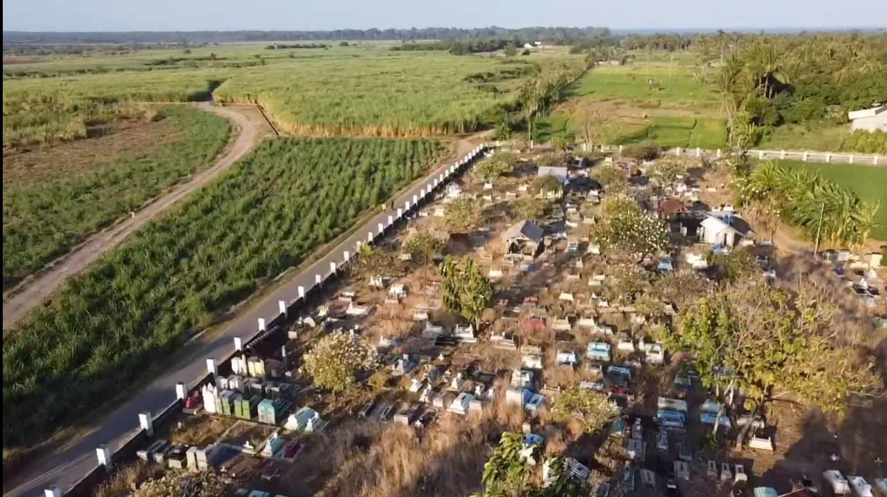

Beranda
Objek Wisata
Produk UMKM
Hubungi Kami →
Objek Wisata Wonorejo
Jelajahi berbagai destinasi indah dan menarik yang ditawarkan Wonorejo.
Pemandangan Pantai Pandean Wonorejo
Pantai
Pemandangan Gunung Baluran
Pegunungan
Hamparan Sawah Hijau
Sawah
Landmark Desa
Warisan Budaya

Makam Kebangsaan Wonorejo
Budaya
<
>